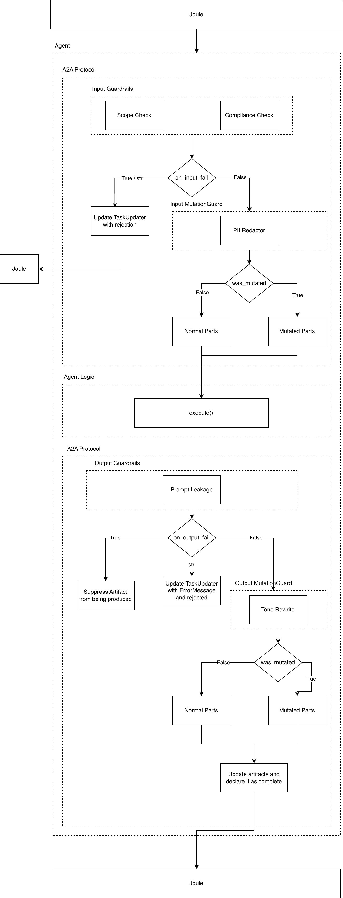

Architecture¶
Overview¶
Aegis has two execution modes — Guard and MutationGuard — both with the same fluent
.use() API. Choose based on whether you need to detect issues or fix them.
Guardrail Lifecycle¶
The diagram below shows the intended integration pattern for a full A2A agent request cycle.

The validators named below are illustrative — Aegis ships built-in validators (see Validators), and you can also supply your own (see Custom Validators).
Input phase:
- Input Guardrails (
Guard) — e.g. a content filter and a PII detector run concurrently. - If any fails → propagate to
TaskUpdaterwith a rejection message and fail the task. - If all pass → continue to input mutation.
- Input MutationGuard — e.g. a PII redactor sanitizes the incoming message before it reaches
execute().
Output phase:
- Output Guardrails (
Guard) — e.g. a prompt-leakage check on the agent's response. - If fails → suppress the artifact or update
TaskUpdaterwith an error message. - If passes → continue to output mutation.
- Output MutationGuard — e.g. a tone normalizer rewrites the tone before the response is returned.
Design Principles¶
These principles explain why the library behaves the way it does.
Detect, don't mutate (Guard)
: Guard validators only return PassedResult or FailedResult. They never modify the input.
This makes concurrent execution safe — no validator can affect another's input.
Mutation is explicit (MutationGuard)
: Only MutationGuard can transform values, via validators that implement mutate().
Detection and mutation are separate concerns with different execution semantics.
No value chaining in Guard
: All Guard validators receive the original input simultaneously via asyncio.gather().
A later validator cannot see an earlier validator's side effects.
On-fail handlers are void
: on_fail callbacks are side-effect only — log, notify, raise. They never return a
transformed value. Value transformation belongs in MutationGuard.
Validators are pluggable — built-in or your own
: Aegis ships a set of built-in validators (see Validators), and the
engine runs any validator satisfying a structural protocol (Validator / MutationValidator)
or subclassing BaseValidator / BaseMutationValidator, so you can add your own too. Integrate
explicitly via Guard/MutationGuard for full control, or use the A2A executor wrapper for a
simpler drop-in experience. The underlying API stays the same either way.
Protocol-first validators
: Validators satisfy a structural protocol (Validator / MutationValidator). Any class
with the right methods qualifies — no forced inheritance. BaseValidator and
BaseMutationValidator are opt-in convenience base classes.
Why Separate Validators?¶
Guardrails can theoretically be embedded directly into an agent's system prompt as behavioral instructions. Aegis takes the opposite approach — all validators run as independent calls, outside the agent. Here's why.
Reliability — the primary reason : Prompt instructions are suggestions, not guarantees. Under adversarial pressure (prompt injection, jailbreak, multi-turn escalation), a model can ignore embedded instructions. A guardrail that can be bypassed has no value when it matters most. Separate validators enforce independently — a deterministic check cannot be talked out of doing its job.
Reusability : One validator definition, used by any agent that needs it. Change once, apply everywhere. Embedding guardrail logic in prompts means copying and maintaining it in every agent separately.
Testability
: Each validator can be unit tested in isolation with known inputs and expected PassedResult /
FailedResult outputs — without involving the full agent. Embedded validators are entangled with
agent business logic and cannot be tested or benchmarked independently.
Auditability
: Separate validators produce structured results: which validator fired, what it caught, and the
full FailedResult with details. Embedded validators are a black box — there is no trace of why
the agent did or didn't enforce a rule.
Guard: Concurrent Detection¶
Input ──┬── Validator A ──┬── GuardResult ├── Validator B ──┤ .results └── Validator C ──┘ .has_failures .failures
- All validators run simultaneously via `asyncio.gather()`.
- Returns `GuardResult` — inspect `has_failures` and `failures`.
- Values are **never** modified.
- Each validator gets an `on_fail` action: `LOG` (default), `EXCEPTION`, `NOOP`, or a custom callable.
```python
from aegis import Guard, OnFailAction
guard = (
Guard("input-guard")
.use(ValidatorA(), on_fail=OnFailAction.EXCEPTION)
.use(ValidatorB(), on_fail=OnFailAction.LOG)
.use(ValidatorC()) # defaults to LOG
)
result = await guard.validate(value="some input")
print(result.has_failures) # bool
print(result.failures) # list[FailedResult]
MutationGuard: Sequential Mutation Pipeline¶
Input ──► Validator A ──► [mutate A] ──► Validator B ──► [mutate B] ──► output
validate() │ validate() │
FailedResult? ───────┘ FailedResult? ───────┘
- Validators run in registration order.
- When a validator returns
FailedResult, itsmutate()is called immediately. - The mutated value is passed to the next validator (each sees the previous output).
- Returns
MutationGuardResult: was_mutated—Trueif any edit was appliedoutput— the final content, mirroring the input type: astrwhen called with astr, otherwise aContentView(same item count and order as the input); call.render()for textresults— list of allValidationResults
from aegis import MutationGuard
guard = (
MutationGuard("output-guard")
.use(ValidatorA())
.use(ValidatorB())
)
result = await guard.validate("some output")
final = result.output # always the final content — str in → str out, mutated or not
# result.was_mutated only tells you *whether* anything changed (e.g. for logging).
Decision Guide¶
| Aspect | Guard | MutationGuard |
|---|---|---|
| Execution | Concurrent | Sequential |
| Mutation | Never | When validator fails |
| Return type | GuardResult |
MutationGuardResult |
on_fail param |
Yes (LOG / EXCEPTION / NOOP / callable) | No |
| Typical use | Input validation, compliance, scope checking | Output sanitization, PII redaction, tone correction |
Use Guard when you need to decide whether to proceed with a request — the content is accepted or rejected as-is.
Use MutationGuard when you want to clean up content before passing it on — the content is acceptable but needs transformation.
Combining Both¶
A typical executor uses both: a Guard to gate input, a MutationGuard to clean output.
from aegis import Guard, MutationGuard, OnFailAction, ValidationError
from aegis.validators.detection import ContentFilter
from my_validators import MaxLength, PIIRedactor # your own validators
# Built once, reused across requests
input_guard = (
Guard("input")
.use(MaxLength(5000), on_fail=OnFailAction.EXCEPTION)
.use(ContentFilter(blocked_topics=["fraud"]), on_fail=OnFailAction.EXCEPTION)
)
output_guard = MutationGuard("output").use(PIIRedactor())
# In your executor:
async def execute(request, task_updater):
try:
await input_guard.validate(value=request.message)
except ValidationError as e:
await task_updater.submit(message_with_text(f"Request rejected: {e.result.error_message}"))
await task_updater.failed()
return
response = await your_agent_logic(request)
out = await output_guard.validate(response)
final_response = out.output # str in → str out; already the final content
await task_updater.submit(message_with_text(final_response))
await task_updater.complete()
See Cookbook for more integration patterns including full executor examples.